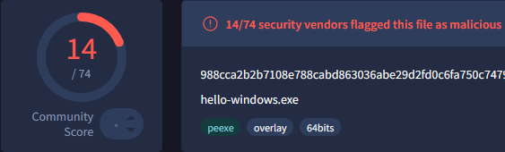
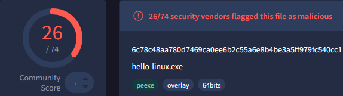
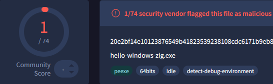
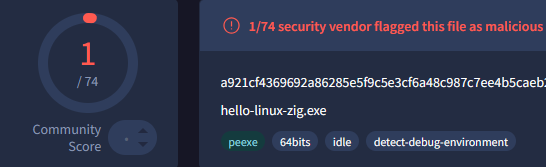

Nim + Zig = ❤️
- categories
- Nim
- published
Using Zig to compile Nim code, avoiding static malware detections.
I like Nim, it allows me to build C like programs without having to suffer through learning C. It’s fun to write in, has python like syntax, great FFI and an even better Windows library called Winim.
Plus, cool people have already written stuff in nim :
- https://github.com/byt3bl33d3r/OffensiveNim
- https://github.com/chvancooten/NimPlant
- https://github.com/S3cur3Th1sSh1t/NimGetSyscallStub
- https://github.com/icyguider/Nimcrypt2
- and more
Introduction
A lot of malware has been written in Nim[1] (see list above) and this has caused some frustration on the Nim forums and Nim’s github page [2][3][4] about anti-virus detecting normal programs developed in this language.
[1] Decoy Microsoft Word Documents Used to Deliver Nim-Based Malware.
[2] Why I stopped programming in Nim
[3] Anti-virus at work prevents the use of Nim binaries
[4] Check Nim’s binaries aren’t Virus
Having a legitimate Nim binary already flagged as malware is a bad start. It’s especially an issue if we want to continue developping offensive tools with Nim. As if developing offensive tools hadn’t created the issue we now want to avoid.
How does Nim’s compilation process work ?
Nim generates C code that then gets compiled by the compiler installed on your system, gcc, clang or x86_64-w64-mingw32-gcc.
The configuration file nim.cfg contains the logic to choose which compiler to use. [5]
# Example from the config file
@if unix and mingw:
# Cross compile for Windows from Linux/OSX using MinGW
[SNIP]
amd64.windows.gcc.exe = "x86_64-w64-mingw32-gcc"
amd64.windows.gcc.linkerexe = "x86_64-w64-mingw32-gcc"
amd64.windows.gcc.cpp.exe = "x86_64-w64-mingw32-g++"
amd64.windows.gcc.cpp.linkerexe = "x86_64-w64-mingw32-g++"
You can also specify the compiler to use on the command line :
nim c --cc:clang --clang.exe="x86_64-w64-mingw32-clang" --clang.linkerexe="x86_64-w64-mingw32-clang" --passc:"stuff" --passl:"stuff"
[5] https://nim-lang.org/docs/nimc.html#compiler-selection
By default, compiling on Windows or cross-compiling on Linux, the detection rates match what the Nim devs were complaining about.
Simple program :
import winim
import std/strformat
var
buffer = newMString(UNLEN + 1)
cb = DWORD buffer.len
GetUserNameA(&buffer, &cb)
buffer.setLen(cb - 1)
MessageBox(0, fmt"Hello {buffer} !", "Nim is Powerful", 0)
Detections :
Compiling on Windows  |
Cross-Compiling on Linux  |
I was therefore curious if using a non-default compiler reduced anti-virus detections so I could keep using Nim for all my perfectly legitimate projects.
Where does Zig come in ?
Since we can use whatever compiler we want from Nim, I thought we could use Zig’s compiler [6].
But wait, you might ask, isn’t Zig a language of its own, how or why can it compile C code ?
[6] https://ziglang.org/learn/overview/
Well, Zig (Zig CC) is described by its lead developer Andrew Kelley as a Powerful Drop-In Replacement for GCC/Clang [7]. We can use Zig to compile C code, and a bunch of other things too [7.1]. In addition, it comes with incredible cross-compilation features.
[7] https://andrewkelley.me/post/zig-cc-powerful-drop-in-replacement-gcc-clang.html
[7.1] https://medium.com/@edlyuu/zig-c-c-compiler-wtf-is-zig-c-790d9ad8d85b
This means we can use Zig to compile our Nim program, we just need a way to tell Nim to use Zig. Thankfully, someone else already did the leg work [8], and published a nimble package to help with this.
[8] https://github.com/enthus1ast/zigcc
You can also follow the stackoverflow link on the Github page and compile your own version (is what I did).
Once the helper program installed or compiled, we can use Zig with Nim when targeting Windows with the following commands :
# On Linux
nim c --cc:clang --clang.exe="zigcc" --clang.linkerexe="zigcc" --passc:"-target x86_64-windows-gnu" --passl:"-target x86_64-windows-gnu" --forceBuild:on --os:windows --out:hello-linux-zig.exe hello.nim
# On Windows
nim c --cc:clang --clang.exe="zigcc" --clang.linkerexe="zigcc" -o:hello-windows-zig.exe hello.nim
The detection rate speak for themselves.
Compiling on Windows with Zig  |
Cross-Compiling on Linux with Zig  |
Disclaimer: I haven’t (yet) tried this on more significant Nim projects, but I see no reason why it wouldn’t work.
Dockerfile
Here’s a Dockerfile that installs Zig, Nim and some Nimble packages :
FROM alpine:3.20
RUN apk update && \
apk add --no-cache build-base git zig nim nimble && \
rm -rf /var/cache/apk/* && \
nimble install -y winim nimcrypto ptr_math zigcc && \
mkdir /build && mkdir /src
ENV PATH="${PATH}:/root/.nimble/bin"
CMD ["/bin/sh"]
You can use it like this :
docker run -v "`pwd`:/src" -v "`pwd`:/build" nim-zig-docker nim c --cc:clang --clang.exe="zigcc" --clang.linkerexe="zigcc" --passc:"-target x86_64-windows-gnu" --passl:"-target x86_64-windows-gnu" --forceBuild:on --os:windows --out:./build/hellowindows.exe ./src/hello.nim
and probably make it better by having an entrypoint script to manage the argument list.
Thanks for reading,
Fudge…